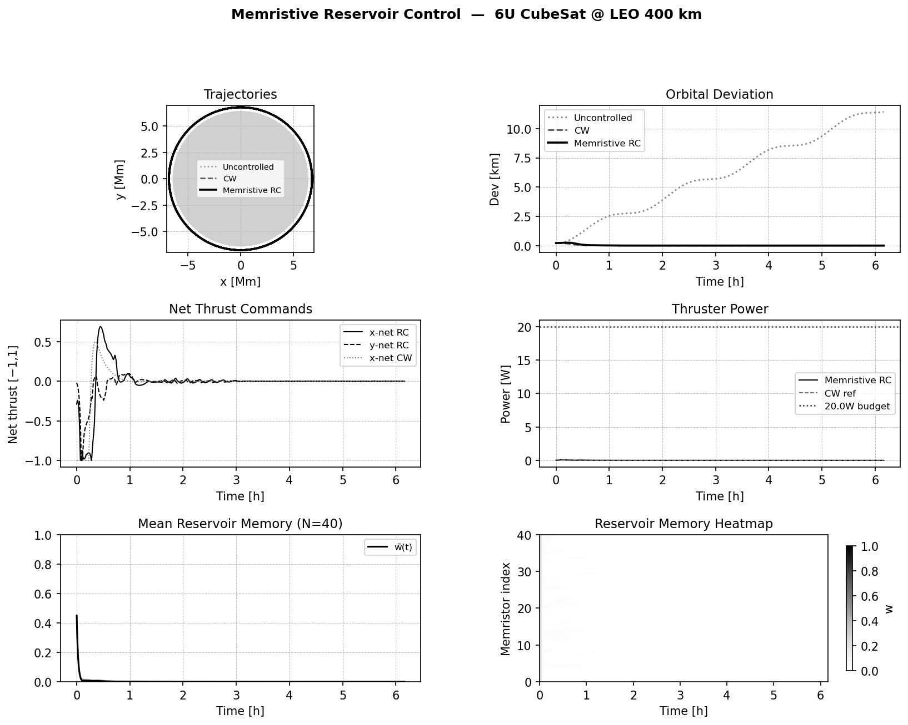
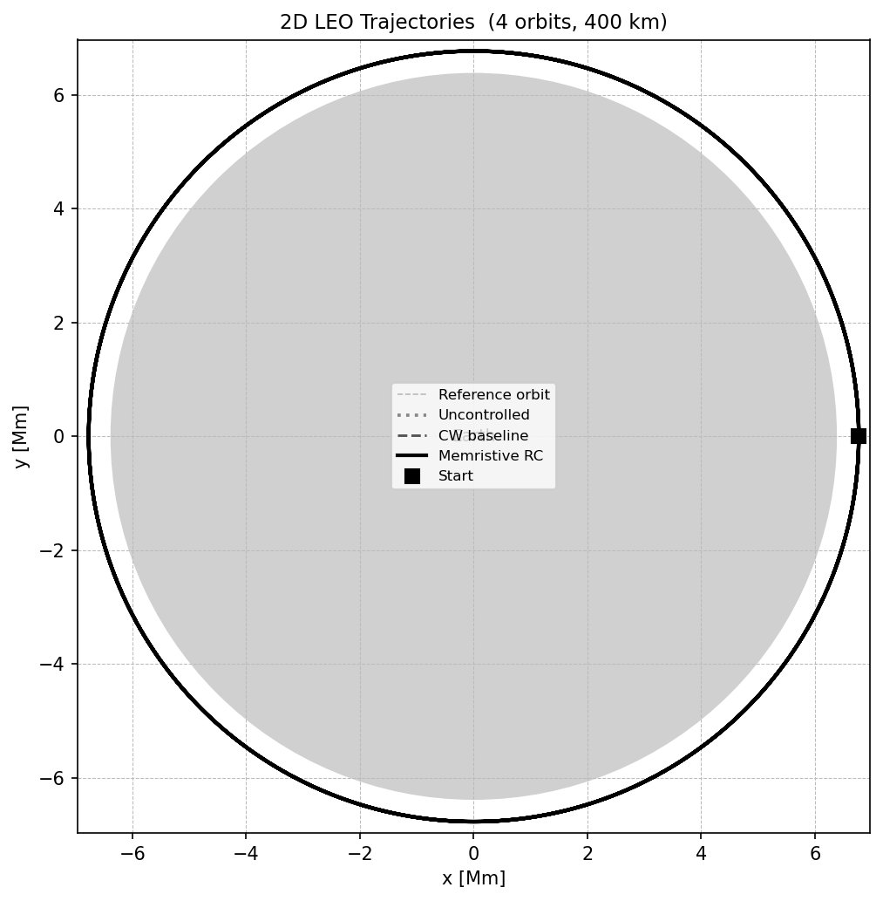
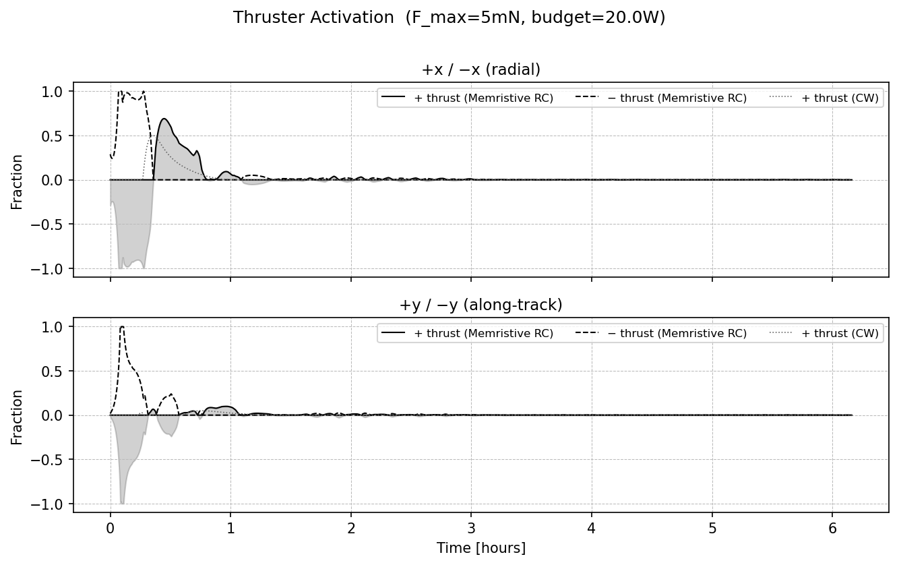
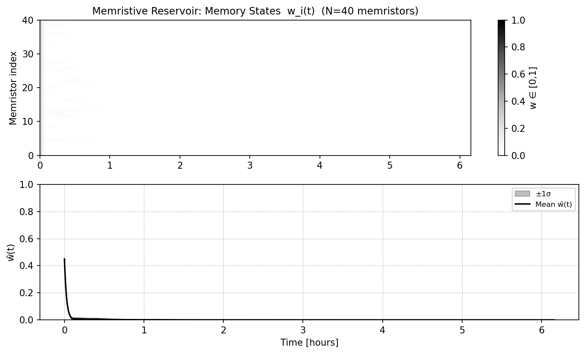
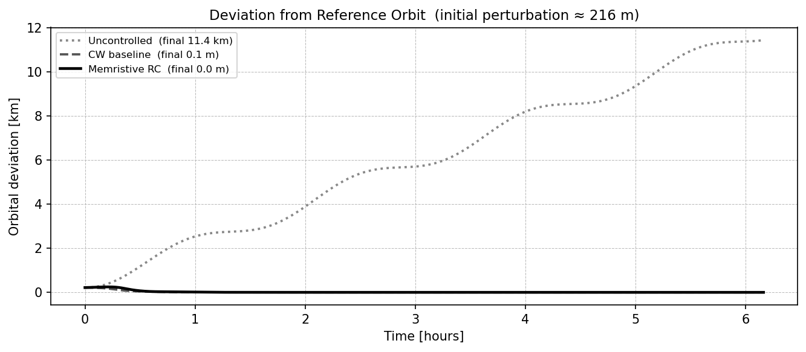

nonequilibrium systems - memristive reservoirs - orbital control
Memristive Reservoir Control of a Low-Orbit Satellite
May 28th, 2026
This post documents a small simulation and browser game in which a 6U CubeSat in low Earth orbit is controlled by a memristive reservoir computer. The reservoir is not trained by backpropagation: it is driven by orbital error signals and only a linear readout is fitted.

1. The control problem
The physical system is deliberately simple: a point-mass satellite moving in a two-dimensional orbital plane around the Earth. The reference trajectory is a circular orbit at altitude \(400\,\mathrm{km}\). The actual satellite starts near that reference orbit but receives a perturbation, for instance a displacement and a velocity kick. The goal is to keep the satellite close to the reference trajectory using four small thrusters.
The state vector used by the simulation is
The reference orbit is
where \(R_0=R_E+400\,\mathrm{km}\), \(V_c=\sqrt{\mu/R_0}\), \(\mu=GM\), and \(n=V_c/R_0\). In the code this is the function ref_orbit(t).
| Quantity | Value in the simulation |
|---|---|
| Satellite mass | \(M=8\,\mathrm{kg}\) |
| Orbit altitude | \(400\,\mathrm{km}\) |
| Circular speed | \(V_c\simeq 7.67\,\mathrm{km/s}\) |
| Orbital period | \(T\simeq 92.4\,\mathrm{min}\) |
| Maximum force per thruster | \(F_\max=5\,\mathrm{mN}\) |
| Number of thrusters | 4, aligned with \(\pm x\) and \(\pm y\) |
2. Newtonian orbital dynamics
The equations integrated in both the Python simulation and the browser version are Newton's equations in the orbital plane, with the central gravitational potential, atmospheric drag, and thrust. If \(r=(x,y)^T\) and \(\|r\|=\sqrt{x^2+y^2}\), the gravitational acceleration is
The drag term is modeled as a quadratic velocity drag with fixed density:
Thus the full state equation is
This is the function eom(t, s, u) in the Python code and eom(state, u) in the browser game. The Python version uses solve_ivp. The browser game uses a fourth-order Runge-Kutta step, which is sufficient for interactive control at the chosen time step.

3. Four-thruster actuation
The control vector is a vector of four normalized thruster activations:
The resulting force is
The helper f2u(Fx,Fy) performs the inverse mapping. Given a desired force \((F_x,F_y)\), it activates the positive or negative thruster on each axis and clips the command to the maximum force:
if Fx > 0: u[+x] = min(Fx / F_MAX, 1)
else: u[-x] = min(-Fx / F_MAX, 1)
if Fy > 0: u[+y] = min(Fy / F_MAX, 1)
else: u[-y] = min(-Fy / F_MAX, 1)There is also a simple power-budget limiter in the code. It rescales the four activations if their proxy power exceeds the budget. The important control-theoretic point is that the readout produces a continuous desired force, but the satellite receives bounded directional thruster fractions.

4. The Clohessy-Wiltshire teacher
The reservoir is trained by imitation. First, a conventional controller is used to generate examples. This controller is a radial and along-track proportional-derivative law inspired by the Clohessy-Wiltshire relative-orbit equations.
At each time \(t\), the inertial error \(s-s_\mathrm{ref}\) is projected into the instantaneous orbital frame. Define
where \(\theta=\mathrm{atan2}(y_\mathrm{ref},x_\mathrm{ref})\). The radial and tangential position errors are
and similarly for the velocity errors \(d_{v,r}\) and \(d_{v,t}\). The teacher acceleration in the rotating frame is
The gains used in the code are
The terms proportional to \(2n\) are Coriolis-like feedforward terms. After computing \((a_r,a_t)\), the controller rotates the desired acceleration back into the inertial \((x,y)\) frame, multiplies by \(M\), and maps the result through f2u.
5. The memristive reservoir
The reservoir is a network of memristive internal variables. It is not a recurrent neural network trained through time. Its recurrent structure is physical: each memristor has a memory state \(w_i(t)\in[0,1]\), and the network topology appears through a cycle-space projector.
The reservoir evolution law used in the simulation comes from the original paper The complex dynamics of memristive circuits: analytical results and universal slow relaxation (arXiv:1608.08651). Written in the notation used here, the internal memory variables obey
where
The input signal is the normalized orbital deviation:
with
The matrix \(\Omega\) is the cycle-space projector of the randomly generated circuit graph. If \(B\) is the incidence matrix, then
where \((\cdot)^+\) denotes the Moore-Penrose pseudoinverse. This projection removes gradient components and keeps the component compatible with circuit cycles.
| Reservoir parameter | Value |
|---|---|
| Number of memristors | \(N=40\) |
| Memory decay time | \(\beta=100\) |
| Drive scale | \(\alpha=1.5\times 10^{-3}\) |
| Voltage scale | \(V_0=1\) |
| Resistances | \(R_\mathrm{on}=100\), \(R_\mathrm{off}=16000\) |

6. Training the readout
Training is supervised, but only at the readout. The reservoir weights and topology are fixed after initialization. The code generates \(25\) random teacher-controlled trajectories. Each trajectory starts from a random perturbation
For each trajectory, the CW controller stabilizes the satellite for one orbit. Along the way, the reservoir receives the deviation signal and evolves according to this memristive-network evolution law. The training set consists of pairs
where \(F^\mathrm{CW}(t_k)\) is the inertial force implied by the CW thruster command:
Stacking all reservoir states into a matrix \(R\in\mathbb{R}^{N\times T}\), and all teacher forces into \(F\in\mathbb{R}^{2\times T}\), the ridge-regression readout is
This is the entire learning step. There is no gradient descent through the satellite dynamics, and no training of the memristive network itself. The reservoir supplies nonlinear, history-dependent features; the readout learns how to combine them into a force command.
R = reservoir states collected across teacher trajectories
F = CW teacher forces collected at the same times
A = R @ R.T + lambda * I
W_out = F @ R.T @ inv(A)7. Closed-loop deployment
After training, the CW controller is removed. The deployed reservoir controller repeats the following loop:
- Compute the current deviation \(\delta(t)=s(t)-s_\mathrm{ref}(t)\).
- Normalize the deviation and drive the memristive reservoir.
- Compute the force readout \((F_x,F_y)^T=W_\mathrm{out}w(t)\).
- Convert this force to four thruster activations via
f2u. - Integrate the satellite dynamics forward.
In equations, the deployed controller is simply
The interesting part is that \(w(t)\) is not just the present error. It is a nonlinear fading memory of the recent error history, filtered by the memristive-network dynamics and the circuit-topology projector.

8. The browser game modes
The browser version turns the same mathematical model into a game. It has two modes.
In Recover mode, the satellite receives a collision impulse and the player directly commands the four thrusters. The manual controls modify the same vector \(u=(u_{+x},u_{-x},u_{+y},u_{-y})\) that the simulation uses for thrust.
In Kick mode, the player applies velocity kicks to the satellite and the memristive reservoir controller tries to recover the reference orbit. The controller is considered defeated when the satellite crosses a loss boundary:
- altitude below \(120\,\mathrm{km}\), interpreted as reentry or crash;
- altitude above \(1200\,\mathrm{km}\), interpreted as escape from the mission orbit;
- position error above \(800\,\mathrm{km}\), interpreted as loss of tracking.
The game also draws a live satellite actuator schematic. In Recover mode it displays the human thruster command. In Kick mode it displays the reservoir command. In both cases, the displayed bars are the actual entries of \(u\) being passed to the integrator.
Try the browser game here: either recover the orbit by hand, or kick the satellite and see whether the reservoir controller can bring it back.
9. Implementation notes
The Python scripts and the browser game implement the same hierarchy:
| Layer | Python | Browser |
|---|---|---|
| Reference orbit | ref_orbit | refOrbit |
| Dynamics | eom, istep | eom, integrate |
| Force-to-thruster map | f2u | f2u |
| Teacher controller | cw_ctrl | cwCtrl |
| Reservoir | MemristiveReservoir | MemristiveReservoir |
| Readout training | train_multi | trainMulti |
| Deployment controller | RCCtrl.compute | RCCtrl.compute |
The central idea is modular: Newtonian orbital mechanics defines the plant; a conventional CW controller defines the training signal; the memristive reservoir supplies a physical nonlinear memory; and ridge regression turns that memory into force commands. Once trained, the reservoir controller replaces the teacher in the closed loop.